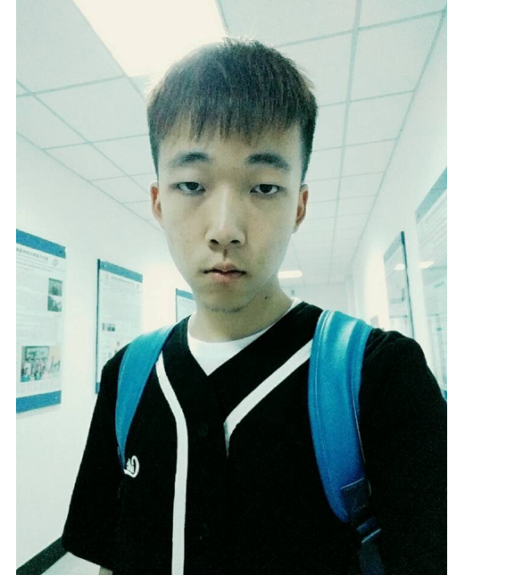
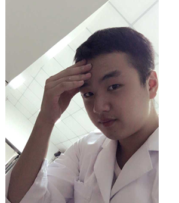
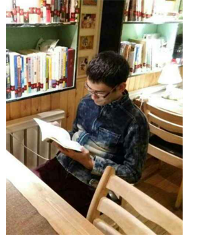
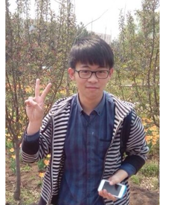
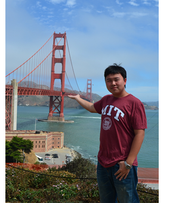
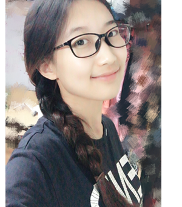
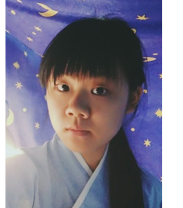
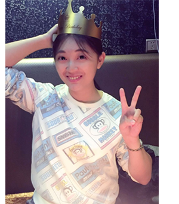
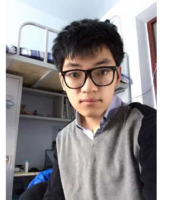
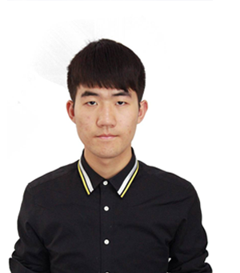

Team Members
Heng Xu, Team Leader
I am leader of team Nano-JLU. Since I was enrolled in Tang Aoqing Honors Program in Science (Chemistry), I have participated in several researches in the fields of zeolite, quantum dot and biomolecule self-assembly. In this project, my work mainly focused on the rational design of self-assembling biomolecules and the assemblies' construction and characterization. I am also a reviewer of the whole project, making sure that each part of work harmonizes with each other.
Junyang Li, Team Vice Leader
I am a junior student of Lifesciences College at Jilin University. I major in biological science and my research interests lie at the interdisciplinary use of chemistry in biological system. In this project, I was responsible for the verification of the assemblies�biological use in nucleic acid delivery and also contributed a lot to the synthesis of the assemblies. I helped administrating the team, assigning work and reminding everyone meeting the deadline.
Zhaoyu Zhang, Team Vice Leader
Hey, guys! I am Zhaoyu Zhang, a senior student of Jilin University majoring in Tang Aoqing Honors Program in Science (Biology). The major job that I had in the nano-JLU is to give advice and help coordinating & working daily tasks. I am such a person longing for innovative idea and that is why I participate in BIOMOD competition with whole enthusiasm. It is the competition that provides me the opportunity of getting access to bionanotechnology and a training of my ability of cooperation as well as communication.
Siyuan Du
I am a senior student majoring biotechnology at Jilin University. In this project, I was responsible for web design & development, video production and data processing. Besides, I participated in some parts of experiment. And I was also a reviewer of writing parts.
Zheyu Jin
I am a senior student majoring biotechnology at Jilin University. I am proud to be a member of team Nano-JLU. In our team, I mainly focused on the video part and the presentation part. During the preparation of BiOMOD, I’ve been happy to work with all you guys. Finally, the project we make can be both innovative and interesting. Hope you will like it.
Meiting Yue
 I am a senior student majoring biotechnology at Jilin University. I mainly participated in the video making and some paperwork during the past 8 months. Joining BIOMOD is a good chance for me to learn how to get my thoughts from a mass of literature. I cherish this opportunity very much, because it may be the last time for me to join a competition as a student of Jilin University. And I will remember the days I spent with my teammates forever.
Yidi Wang
I am a junior student in Tang Aoqing Honors Program in Science (Biology). I was involved in early works like project designing and experiments. After that, I was mainly in charge of writing works including Labbook and writing and editing.
Xiuhui Tang
Hello, I am a member of team Nano-JLU. In our team, it is my job to make sure that all the WIKI results are analysed correctly and objectively. It is fortunate that we make it happen. All the things we make are definitely same as we design. Trust me, our work will be novel and fun!
Nuo Zhai
 I was mainly responsible for image design. I participated in the experimental pre-discussion, and later work in the design of the team uniforms, logo, put forward my own past experience about the competition.
I was mainly responsible for image design. I participated in the experimental pre-discussion, and later work in the design of the team uniforms, logo, put forward my own past experience about the competition.
Yishuo Lyu
I mainly participated in the team's image design. I also participated in the experimental program proposed and discussed. I design the team logo, and participated in the design and display of the presentation.
Wanli Ma
I participated in part of the experiment records�translation and provided materials for the video making.
Faculty Mentors

Acknowledgement
 We would like to thank Prof. Junqiu Liu and Dr. Xiaotong Fan (State Key Laboratory of Supramolecular Structure and Materials of Jilin University) for their generous technical and theoretical support.
We would like to thank Prof. Junqiu Liu and Dr. Xiaotong Fan (State Key Laboratory of Supramolecular Structure and Materials of Jilin University) for their generous technical and theoretical support.
Prof. Junqiu Liu, Jilin Univ, State Key Lab Supramol Struct & Mat, Coll Chem, 2699 Qianjin St, Changchun 130012, Peoples Republic of China.
Prof. Guo'an Zhao, Jilin Univ, Sch Life Sci, 2699 Qianjin St, Changchun 130012, Peoples Republic of China.
Prof. Quanshun Li, Jilin Univ, Sch Life Sci, Minist Educ, Key Lab Mol Enzymol & Engn, Changchun 130012, Peoples Republic of China.
Dr. Xiaotong Fan, Jilin Univ, State Key Lab Supramol Struct & Mat, Coll Chem, 2699 Qianjin St, Changchun 130012, Peoples Republic of China.
Miss He Huang, Jilin Univ, Sch Life Sci, Changchun 130012, Peoples Republic of China.